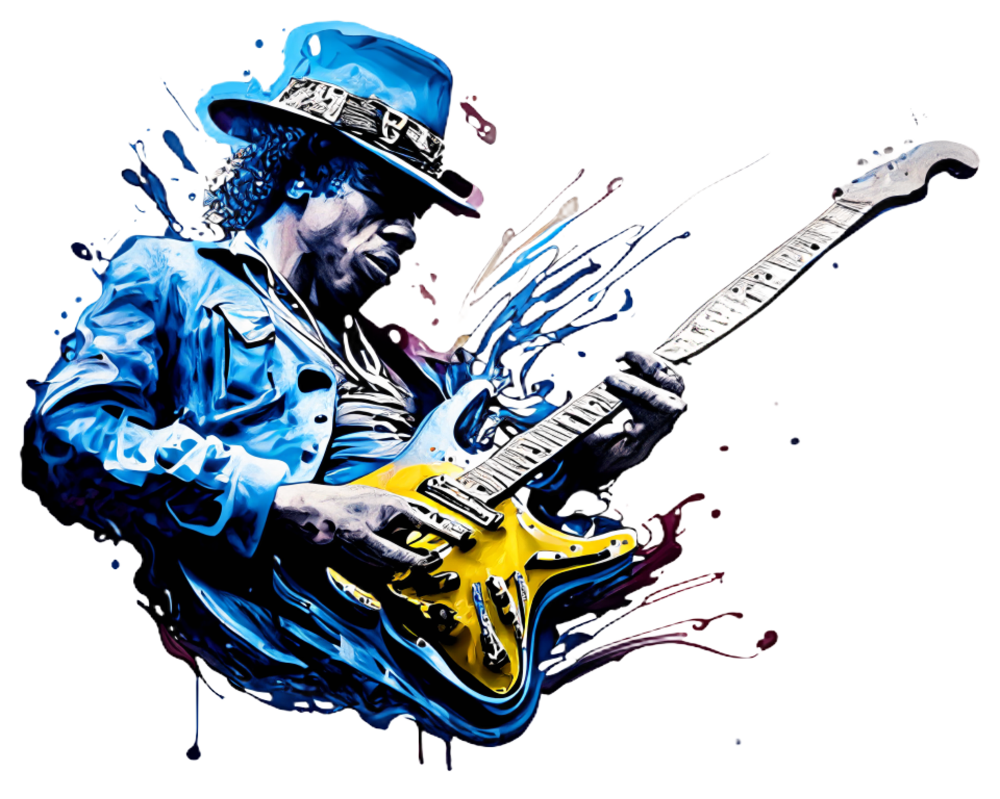

朋友
朋友
 社團
社團
 影片
影片
 Marketplace
Marketplace
 動態消息
動態消息
{% if session.music_type == 'Blues, Jazz, Soft Rock' %}


你的性格類型是：
理性巡航者

音樂類型：
藍調、爵士、軟性搖滾
你對事物常抱持懷疑態度且追求理性思考，你探索世界的各個角落，穿梭於現實和社群媒體中，並以你的思考方式為其注入獨到的見解和風格。
{% elif session.music_type == 'Country Music, Classical Music, Folk Music' %}
你的性格類型是：
情感親善大使
音樂類型：
鄉村音樂、古典樂、民謠
你用有邏輯且結構性強的方式與他人交流，讓大家在社群媒體中與你互動時都能感受滿滿的真誠和舒適感。
{% elif session.music_type == 'Heavy Metal Music' %}
你的性格類型是：
火爆浪子
音樂類型：
重金屬
你對事物抱有天生的質疑，在社群媒體中我行我素，發展出一套獨特看待世界的方式。
{% elif session.music_type == 'Buddhist Scriptures, Singing Bowl Sounds' %}
你的性格類型是：
遁隱山林的出世者
音樂類型：
佛經、頌缽聲
你以冷靜的方式對生命和世俗事務進行深入的思考和探究，紅塵俗事已不再是你的牽絆。
{% elif session.music_type == 'Ballad Songs, Pop Songs' %}
你的性格類型是：
全能創作才子
音樂類型：
抒情歌、流行歌
你樂意接受來自各方的想法與建議，並揉合多元觀點進行創作，在社群媒體中有一片自己的天地。
{% endif %}